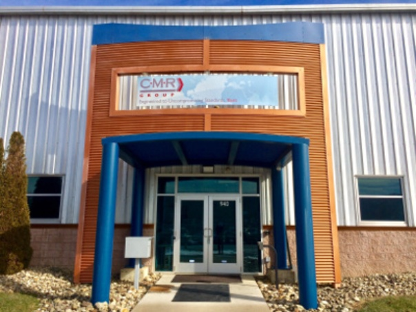
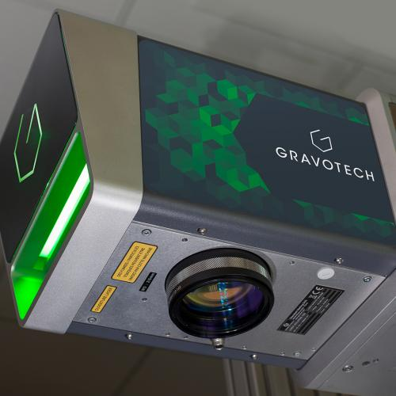

Stephane Perret
Contrôleur de Gestion, 5 ans d'expérience. Actuellement en recherche d'emploi après un VIE à Pittsburgh (Pennsylvanie, USA)
Expérience Professionnelle
Contrôleur de Gestion CMR USA, VIE à Pittsburgh Poste en VIE au sein d'une filiale d'une trentaine de salariés. Seul élément financier aux US de la filiale, je suis en charge d'ajustements de comptabilité générale, du contrôle de gestion, d'aide à la prise de décision du business manager à travers des analyses financières, met en place certains projets et réalise des analyses ad hoc sous la supervision de la DAF UK (principale entreprise du groupe) et US. Différents types de projet tels que réduction de stock, amélioration de marge (analyses de réductions de coûts, ex: BOM produits, transferts de production)
Contrôleur de Gestion Gravotech Marking, CDI à Lyon Clôture mensuelle: Groupe : rapports de ventes, de forecasts et marges Split P&L analytique de l’entité Française et support aux managers. Comptabilité: cut-off et lissage des ventes. Création de rapports Excel (sales report du groupe)
Compétences Clés
A travers mes différentes expériences, j'ai pu développer certaines compétences techniques et qualités listées ci-dessous
Réalisations clés
XXX XXXXX
Projet d'amélioration de marges
Analyse de la marge produit, de ses coûts. Analyse de la BOM (achats coût matière, main d'oeuvre et possibilités d'automatisation), de possibilité de transfert de production dans une autre usine du groupe. Conclusion que les achats pouvaient être améliorés


Formation
J'ai commencé par un DUT GEA puis j'ai continué en Licence et en Master Finance à l'université Lyon2


Centres d'intérêts
Sports (Course à pied, football), Cinéma, Voyages (Chine, Asie du Sud Est, Dubaï, USA, Turquie, Europe, etc.) Projets associatifs : UNICEF Campus Lyon: Création de projets, récolte de fonds Chantier Humanitaire en République Tchèque.


Voulez vous savoir plus à propos de mes expériences professionnelles?
XXXX.
Get in touch
© Untitled. All rights reserved. Design: HTML5 UP.